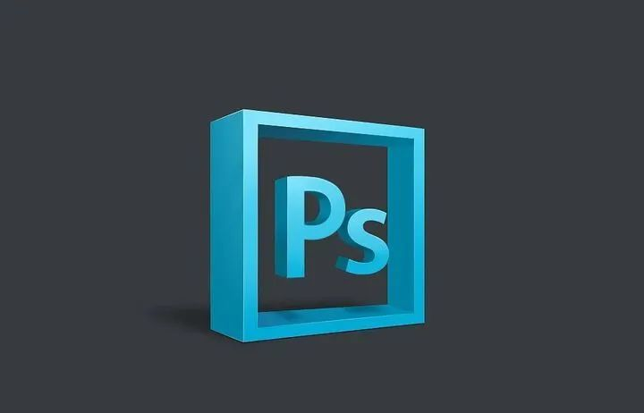
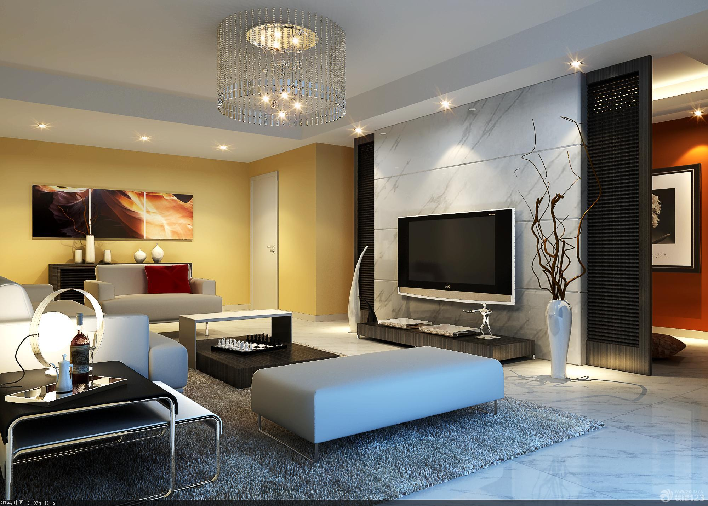

Photography classes in universities usually tell a lot of theoretical knowledge according to textbooks. For photography lovers, theory is important, but it can't be at the expense of our interest in photography. Commercial photography training institutions will teach you to take qualified commercial photography photos in the shortest time, but too much emphasis on modular teaching can not guide students to find their own characteristics, which will pinch students into ordinary shutter pressing robots without personality. Obviously, we need more relaxed, effective and responsible photography training. The photography class of Mantu education is relaxed, pleasant and productive. What we want to teach is actually very simple: one is aesthetics, the other is realization. I need to teach students to think and find their own aesthetic perspective, and then learn to use the camera to realize and express it. I will not preach rigid "requirements", nor will I have the same aesthetic "standards" - everyone's personality is different, so you should create completely different photography works that only belong to you.
https://m.maintolens.com/kc
We plan to let students know what photography is, what we need to learn in this course, what our major is in the future, and so on
In 7-20 days, we plan to lead students to learn the content of our course, carry out real operation and shoot things. We will correct students' mistakes in the shooting process and teach some professional content
In 20-30 days, we will evaluate our teaching results, test the students' learning results, analyze the students' achievements, and then know the students' special projects, point out their shortcomings, and evaluate the students' improved achievements carefully until they can complete the blood of this course

Makeup can not only increase women's self-confidence, but also reflect women's aesthetic judgment and aesthetic pursuit. Mantulais has accumulated strength for many years, gathered an experienced makeup team in the industry, taught full-time and in small classes. Adhering to the excellent teaching concept of theory and practice, mantulais focuses on practical teaching courses and supplemented by professional theoretical knowledge to create professional makeup talents.
https://m.maintolens.com/kc
In one day to seven days, we will spend about seven days to let students know what beauty is and what we mainly study in this course. Only by letting students fully understand our course can they learn our course better. We need to let students understand that our course is not just makeup
In 7-20 days, we will teach students. We will guide students one-on-one. We will answer questions for students who don't understand. We will teach relevant contents and knowledge points of this course. During this period, students will learn all courses about our content
In 20-30 days, we will evaluate our teaching results, test the students' learning results, analyze the students' achievements, and then know the students' special projects, point out their shortcomings, and evaluate the students' improved achievements carefully until they can complete the blood of this course

With the advent of the digital age, various industries have more and more demand for post graphic repairers. With the emergence of various post graphic repair software, the professional requirements of graphic repairers are getting higher and higher. If you want not to be eliminated, you must keep learning and making progress in order to keep pace with the times. Mantulais is a first-class master in the later stage of practical teaching. From basic to advanced, the curriculum system is professional, paying attention to the combination of theory and practice, and step by step, so that you can quickly master the later stage drawing repair technology and become a practical and skilled talent with advanced later stage ideas.
https://m.maintolens.com/kc
In the first seven days, we will popularize our professional knowledge to students and let them know what is going on in the later film and television production, which will facilitate students' learning. After students fully understand our courses, we will teach
In 7-20 days, we will teach students. We will guide students one-on-one. We will answer questions for students who don't understand. We will teach relevant contents and knowledge points of this course. During this period, students will learn all courses about our content
In 20-30 days, we will evaluate our teaching results, test the students' learning results, analyze the students' achievements, and then know the students' special projects, point out their shortcomings, and evaluate the students' improved achievements carefully until they can complete the blood of this course

PS is more and more widely used in the workplace, and enterprises pay more and more attention to the visual aesthetic effect, so they are more willing to hire job seekers with a variety of design skills at a higher salary. This course has many employment directions. It is very suitable for entrepreneurs and people who lack skills. It is difficult to find a job without skills; Learn PS, improve the competitiveness of the workplace, and make the job interview one step faster
https://huke88.com/route/ps2021.html?sem=sogou&kw=100137
We will spend about ten days introducing our course and the software PS we need to use in our course. After students understand our course, we will understand the use of various buttons and we will introduce the use and employment direction of our course to help students see their own way
In 10-25 days, we will teach our professional courses. During this period, we will let students understand and use PS software to assess our tests. We will provide one-on-one education and help to students
In 25-30 days, we will evaluate our teaching results, test the students' learning results, analyze the students' achievements, and then know the students' special projects, point out their shortcomings, and evaluate the students' improved achievements carefully until they can complete the blood of this course

The global architectural decoration industry is developing rapidly. China's architectural decoration interior design industry is facing the competition and impact of its peers in the world. It is both an opportunity and a challenge. The rapid rise of China's interior decoration design industry has made remarkable achievements, with booming market demand and a wide range of service fields. It has formed a new consumption hotspot and a new economic growth point. The acceleration of urbanization, the prosperity of housing industry and the further opening of domestic and foreign markets will bring broader development space for the interior decoration design industry.
Which is the advantage of this course？
1. Large gap: with the development of real estate, interior design and decoration, engineering manufacturing and other industries, the demand for interior design professionals has doubled.
2. High income: the salary of interior designer is the calculation method of base salary + commission. Generally, for a designer who can complete the design scheme independently, the amount of commission is 3-8% of the project fund. Therefore, the more orders are received, the larger the design area and the higher the income.
3. Inexperienced and easy career change: as long as you choose the right courses, 0 basic can also quickly change careers and become an interior designer.
4. The more experience, the higher the salary: interior design is an old and popular position. The higher the qualification, the higher the salary.
https://huke88.com/indoor/18-0-0-0-0-2-1-16-1/?sem=sogou&kw=104903
In the first seven days, we will take our students to understand what interior decoration is. This course is closely related to our life, so it is also very close to our life. We should learn more
In 7-20 days, we will teach students. We will guide students one-on-one. We will answer questions for students who don't understand. We will teach relevant contents and knowledge points of this course. During this period, students will learn all courses about our content
In 20-30 days, we will evaluate our teaching results, test the students' learning results, analyze the students' achievements, and then know the students' special projects, point out their shortcomings, and evaluate the students' improved achievements carefully until they can complete the blood of this course
The main contents of e-commerce courses include: introduction to web marketing, web design and practice, e-commerce standards, web page design, Photoshop, etc.The main learning contents of e-commerce include: computer network principle, network marketing practice, e-commerce, introduction to international trade, marketing planning, web page color matching, web page design, data structure, Photoshop, Java language, web standard and website reconstruction, flashaction script animation design, UI design, e-commerce website construction, e-commerce management practice, ERP and customer relationship management, e-commerce logistics management, consumer psychology Basic skills of e-commerce experiment, online entrepreneurship, e-commerce professional English, news collection, writing and editing.
https://www.trjcn.com/tg/bs2018.html?trackid=ads:sougou3:bp3:E:pc57022
In the first seven days, we will let students understand the e-commerce industry, the prospect of the e-commerce industry and how it will develop in the future. After that, we will give lectures on our snow
In 7-20 days, we will teach students. We will guide students one-on-one. We will answer questions for students who don't understand. We will teach relevant contents and knowledge points of this course. During this period, students will learn all courses about our content
In 20-30 days, we will evaluate our teaching results, test the students' learning results, analyze the students' achievements, and then know the students' special projects, point out their shortcomings, and evaluate the students' improved achievements carefully until they can complete the blood of this course